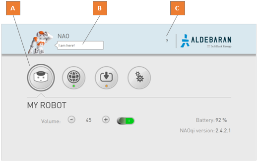
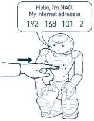
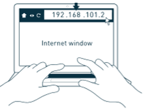
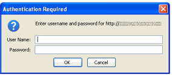

NAO Web page¶
| Part | Name | Allows you to ... |
|---|---|---|
| A | Settings menu | Remotely access to NAO‘s Settings menu. |
| B | Speech bubble | Make your NAO say a short sentence:
|
| C | ? menu | Open:
|
Accessing the NAO Web page¶
| Step | Action |
|---|---|
| Make sure your robot is on. | |
Press the Chest button once. NAO says the four numbers of its IP address: note them. Troubleshooting: If NAO says “I can’t connect to the network”:
|
|
Open a web browser and enter this IP address in the address bar. An authentication windows appears.  |
|
Complete:
|
Result: the NAO Web page appears.
Note
If the robot has not yet been configured, the NAO - Getting started wizard wizard appears instead: follow its steps, you will then have access to the NAO Web page.
Tips: if you have installed Choregraphe, you can also try one of the: Alternative methods to access to NAO Web page.
Alternative methods to access to NAO Web page¶
Accessing NAO Web page using Choregraphe¶
| Step | Action |
|---|---|
| Launch Choregraphe. | |
Choose Connection > Connect to or Click the The Connect to panel is displayed. |
|
| Right-click the green NAO and choose View web page. |
 Connect to button.
Connect to button.{kind=link}
{kind=link}
{kind=link}
{kind=link}
Accessing NAO Web page using NAO‘s name¶
| Step | Action |
|---|---|
| Open a web browser. | |
If you know NAO‘s host name:
If you don’t know NAO‘s host name: |
{kind=link}
Bonjour is conceived by Apple and installed by default on Mac OS X and Linux (Avahi) computers. On Windows, it is automatically installed during the Choregraphe installation process.
For all information about Bonjour, including licensing, please visit the official site: http://support.apple.com/kb/DL999
Lost your password¶
If you have defined then lost the password for the web interface:
- Reset the settings of the robot using the process Upgrading using NAOFlasher with a Factory reset option.